Séance 3 — HTML avancé
Aujourd'hui, on parcourt une page HTML de haut en bas :
le squelette, puis le <head> (ce qui ne se voit
pas), puis le <body> et ses grandes zones
sémantiques — en-tête, navigation, contenu principal, pied de page.
On enchaîne avec les médias, l'organisation d'un site, les tableaux
et les formulaires. À la fin de cette séance, vous saurez structurer
une page entière avec du sens, et vous aurez tout ce qu'il faut pour
finaliser votre projet 1 en séance 4.
Sommaire
1. Rappel : le squelette d'une page
En séance 1, vous avez appris par cœur le squelette d'une page HTML. On le reprend aujourd'hui comme une carte : on va le parcourir du haut vers le bas, balise par balise.
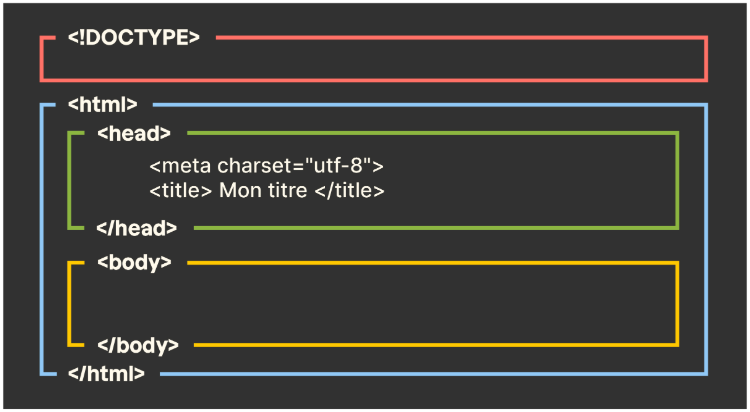
| Balise | Rôle | Visible à l'écran ? |
|---|---|---|
<html> |
La racine : elle englobe toute la page. Son attribut
lang="fr" indique la langue du contenu.
|
— |
<head> |
Les informations sur la page, destinées au navigateur et aux moteurs de recherche. | Non |
<body> |
Le contenu de la page : tout ce que le visiteur voit. | Oui |
Exemple en HTML :
<!DOCTYPE html>
<html lang="fr">
<head>
<meta charset="UTF-8">
<meta name="viewport" content="width=device-width, initial-scale=1">
<title>Mon site Web</title>
</head>
<body>
<h1>Bienvenue sur mon site</h1>
<p>Seul le contenu du body apparaît ici.</p>
</body>
</html>Exemple en rendu navigateur :
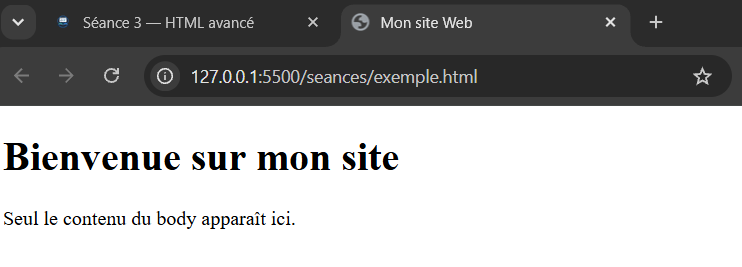
Remarquez dans le rendu : rien de ce qui est écrit dans le
<head> n'apparaît dans la page. Le titre
« Mon site Web » existe pourtant bien — mais il s'affiche ailleurs,
dans l'onglet du navigateur.
2. Le <head> : ce qui ne se voit pas
Le <head> est la partie « coulisses » de la page.
Le visiteur ne voit pas son contenu dans la page elle-même, mais le
navigateur s'en sert pour lire la page (encodage),
l'afficher correctement (écran, styles, icônes) et la
présenter ailleurs (onglet, favoris, résultats
Google). Voici le <head> complet de cette page-ci —
faites F12 pour le vérifier :
<head>
<meta charset="UTF-8">
<meta name="viewport" content="width=device-width, initial-scale=1">
<meta name="description" content="Séance 3 : ...">
<title>Séance 3 — HTML avancé</title>
<link rel="stylesheet" href="https://cdnjs.cloudflare.com/ajax/libs/font-awesome/7.3.1/css/all.min.css">
<link rel="stylesheet" href="../css/site.css">
<link rel="icon" type="image/png" href="../logo/favicon.png">
</head>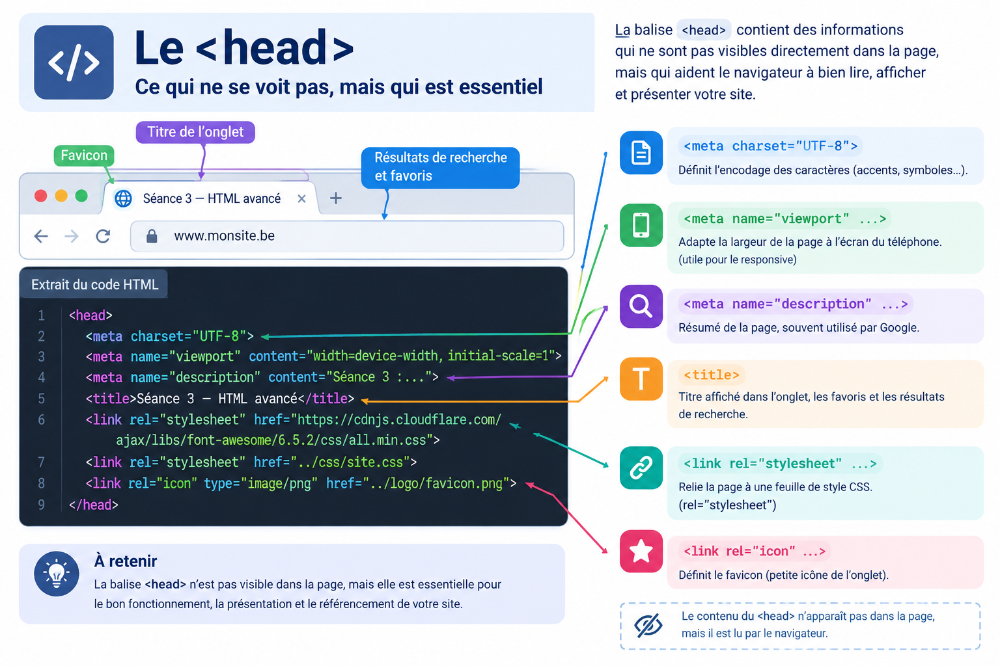
Rappel : <meta> et <title>
| Ligne | Rôle |
|---|---|
<meta charset="UTF-8"> |
L'encodage des caractères : sans lui, les accents (« é », « à ») risquent de s'afficher en symboles bizarres. |
<meta name="viewport" ...> |
Adapte la largeur de la page à l'écran du téléphone. Vous le reverrez en séance 8 (responsive). |
<meta name="description" ...> |
Une phrase qui résume la page, souvent reprise par Google sous le titre du résultat de recherche. |
<title> |
Le titre affiché dans l'onglet, dans les favoris et dans les résultats de recherche. |
La balise <link> : relier la page à un fichier
<link> est une balise orpheline qui
relie la page à une autre ressource. Son attribut rel
(pour relation) dit quel type de ressource,
et href dit où la trouver — avec les
mêmes règles de chemin que pour vos images (séance 1). Contrairement
au lien <a> que vous verrez plus bas,
<link> n'est jamais cliquable ni
visible : le navigateur va simplement chercher le fichier.
rel |
Ce qui est relié |
|---|---|
stylesheet |
Une feuille de style CSS — la vôtre, ou celle d'une bibliothèque comme Font Awesome. |
icon |
Le favicon, la petite icône de l'onglet. |
Le favicon
Le favicon (contraction de favorite icon) est la petite image affichée dans l'onglet du navigateur, à côté du titre, ainsi que dans les favoris et l'historique. Regardez l'onglet de cette page : le logo du cours y apparaît. C'est un détail, mais il permet de retrouver votre site d'un coup d'œil parmi vingt onglets ouverts.
<link rel="icon" type="image/png" href="icons/favicon.png">Exemple en rendu navigateur (l'onglet) :
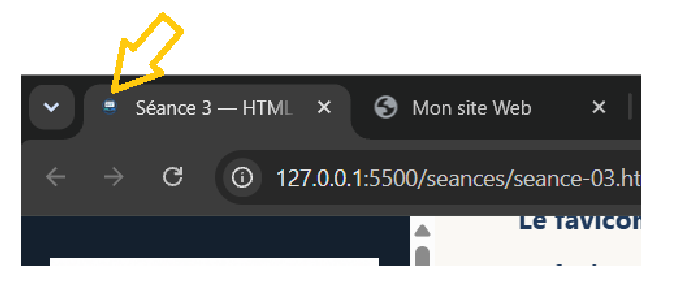
| Critère | Recommandation |
|---|---|
| Format | PNG (le plus simple), SVG
(net à toutes les tailles) ou ICO (l'ancien
format, toujours reconnu). L'attribut type
précise le format : image/png,
image/svg+xml...
|
| Dimensions | Une image carrée, par exemple 32 × 32 ou 64 × 64 pixels. |
| Dessin | Très simple : un symbole ou une initiale. Un logo détaillé devient illisible à 16 pixels. |
Font Awesome : des icônes prêtes à l'emploi
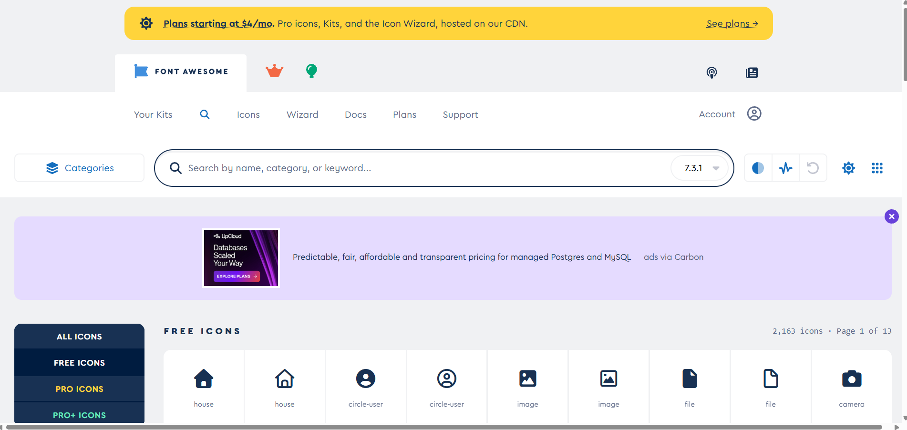
Pour afficher une petite icône (une maison, une enveloppe, un
téléphone), vous pourriez chercher une image, l'enregistrer dans
votre dossier images/ et l'insérer avec
<img>. Avec dix icônes, cela fait dix fichiers à
gérer, et dix requêtes vers le serveur. Font Awesome
est une bibliothèque qui propose des milliers d'icônes gratuites, à
installer en une seule ligne.
Étape 1 — relier la bibliothèque dans le <head>
<link rel="stylesheet" href="https://cdnjs.cloudflare.com/ajax/libs/font-awesome/7.3.1/css/all.min.css">Remarquez le chemin : il est absolu. Le fichier n'est pas dans votre projet, il est hébergé sur un CDN (Content Delivery Network) : un réseau de serveurs qui héberge des bibliothèques partagées par des millions de sites. Avantage : rien à télécharger ni à héberger vous-même. Inconvénient : sans connexion internet, les icônes ne s'affichent pas.
Étape 2 — placer une icône dans le <body>
Sur fontawesome.com/icons, cherchez une
icône (filtre Free) (fontawesome.com/search), cliquez dessus et
copiez le code
proposé. C'est toujours une balise <i> avec deux
classes : le style (fa-solid,
fa-regular, fa-brands pour les logos de
marques) et le nom de l'icône.
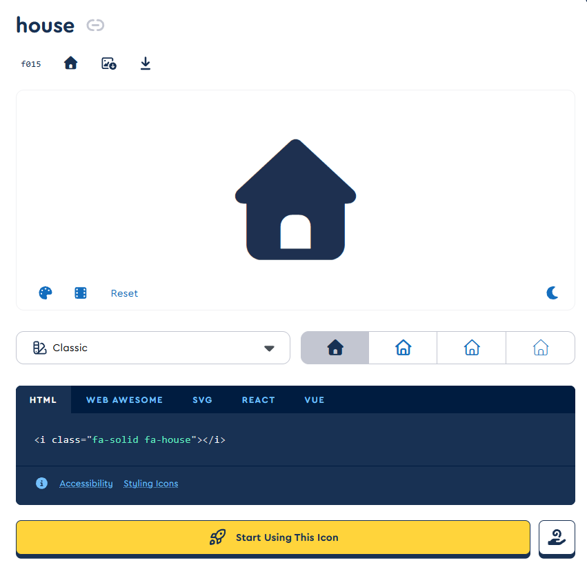
Exemple en HTML :
<p><i class="fa-solid fa-house" aria-hidden="true"></i> Accueil</p>
<p><i class="fa-solid fa-envelope" aria-hidden="true"></i> contact@exemple.be</p>
<p><i class="fa-solid fa-phone" aria-hidden="true"></i> 02 123 45 67</p>
<p><i class="fa-brands fa-instagram" aria-hidden="true"></i> Instagram</p>Exemple en rendu navigateur :
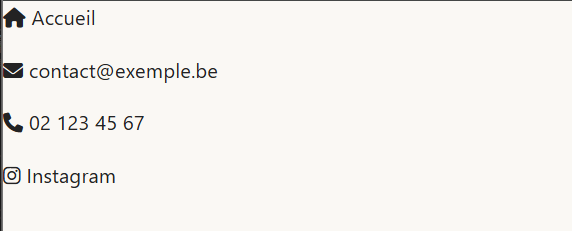
L'attribut class : une étiquette sur un élément
Vous venez d'écrire class="fa-solid fa-house" sans
savoir exactement ce que c'est. class est un
attribut, comme src ou
href, mais qu'on peut mettre sur n'importe
quelle balise. Il colle une ou plusieurs
étiquettes (des noms de classe) sur un élément,
séparées par des espaces.
Seul, class ne change rien à
l'affichage : le navigateur ne sait pas ce que veut dire « promo »
ou « fa-house ». C'est une feuille de style CSS qui
donne un effet à une classe, avec une règle du type « tous les
éléments qui portent l'étiquette promo s'affichent en
rouge ».
Exemple en HTML :
<p class="promo">Crêpe du mois : -20 %</p>
<p class="promo">Menu enfant offert le mercredi</p>
<p>Ouvert du mardi au dimanche.</p>Sans CSS, ces trois paragraphes s'affichent exactement de la même façon. Mais les deux premiers portent la même étiquette : en séance 5, une seule règle CSS suffira à les mettre tous les deux en valeur, sans toucher au troisième.
Pour Font Awesome, c'est exactement le même mécanisme : le fichier
CSS de la bibliothèque, relié dans le <head>,
contient déjà les règles pour toutes ses classes.
class="fa-solid fa-house" se lit donc comme deux
étiquettes : fa-solid (« style plein ») et
fa-house (« dessine une maison »).
id |
class |
|
|---|---|---|
| Combien d'éléments ? | Un seul par page : c'est un identifiant unique. | Autant qu'on veut : la même classe se réutilise. |
| Combien de valeurs ? | Une seule. | Plusieurs, séparées par des espaces. |
| Sert à... | Viser un élément précis : une ancre #contact,
un <label for>. |
Regrouper des éléments pour leur donner un style (CSS). |
Comment ça fonctionne ?
Les icônes Font Awesome ne sont pas des images :
ce sont des caractères d'une police, comme des
lettres. Le fichier CSS relié dans le <head>
contient une règle pour chaque nom d'icône : « quand tu vois la
classe fa-house, affiche le dessin de la maison de la
police Font Awesome ». La balise <i>, elle, est
vide : elle sert seulement de support aux classes.
<img> |
Font Awesome | |
|---|---|---|
| Où est le fichier ? | Dans votre projet, un fichier par image. | Sur le CDN, un seul fichier pour toutes les icônes. |
| Comment l'insérer ? | <img src="..." alt="..."> |
<i class="fa-solid fa-..."></i> |
| Taille et couleur | Celles du fichier image. | Celles du texte qui l'entoure — modifiables en CSS comme une lettre. |
| Pour quoi ? | Photos, illustrations, logo de votre site. | Petits pictogrammes : menu, contact, réseaux sociaux. |
D'autres bibliothèques d'icônes
Font Awesome n'est pas la seule bibliothèque. Le principe est
toujours le même — une ligne dans le
<head>, puis une balise par
icône dans le <body> — seuls le lien et
le nom des classes changent. Voici les deux alternatives les plus
courantes.
Bootstrap Icons
Proposée par l'équipe de Bootstrap, avec plus de 2000 icônes au
trait fin. Catalogue :
icons.getbootstrap.com. Les classes
commencent toutes par bi puis bi- et le nom
de l'icône.
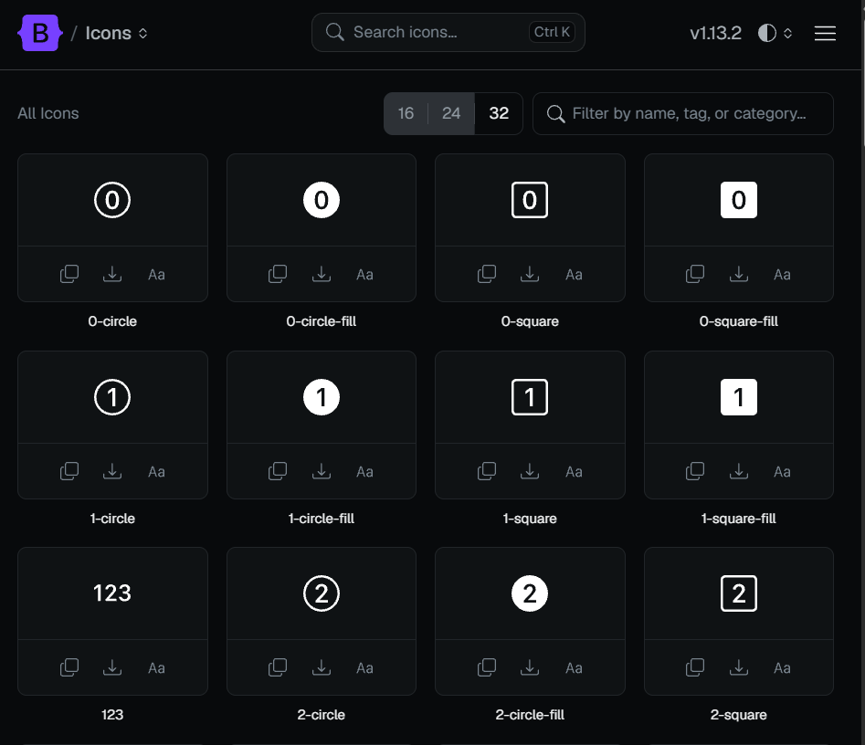
Exemple en HTML :
<!-- dans le <head> -->
<link rel="stylesheet" href="https://cdn.jsdelivr.net/npm/bootstrap-icons@1.11.3/font/bootstrap-icons.min.css">
<!-- dans le <body> -->
<p><i class="bi bi-house" aria-hidden="true"></i> Accueil</p>
<p><i class="bi bi-envelope" aria-hidden="true"></i> contact@exemple.be</p>
<p><i class="bi bi-telephone" aria-hidden="true"></i> 02 123 45 67</p>
<p><i class="bi bi-instagram" aria-hidden="true"></i> Instagram</p>Exemple en rendu navigateur :
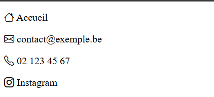
Material Symbols (Google)
Les icônes de Google, reliées depuis Google
Fonts. Catalogue :
fonts.google.com/icons. Leur
fonctionnement est original : on écrit le nom anglais de
l'icône en toutes lettres dans un <span>,
et la police remplace le mot par le dessin (on appelle cela une
ligature). Attention : elle ne contient
aucun logo de marque (pas d'Instagram, par exemple).
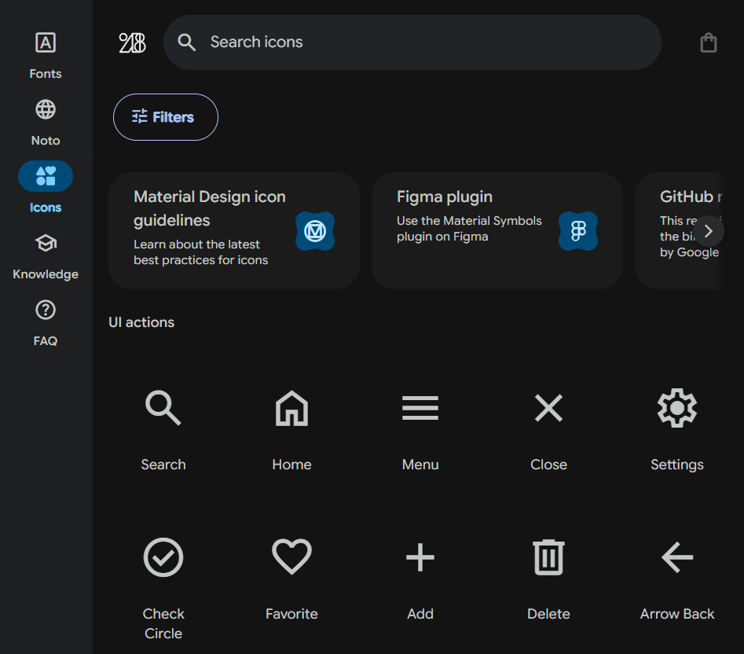
Exemple en HTML :
<!-- dans le <head> -->
<link rel="stylesheet" href="https://fonts.googleapis.com/css2?family=Material+Symbols+Outlined">
<!-- dans le <body> -->
<p><span class="material-symbols-outlined" aria-hidden="true">home</span> Accueil</p>
<p><span class="material-symbols-outlined" aria-hidden="true">mail</span> contact@exemple.be</p>
<p><span class="material-symbols-outlined" aria-hidden="true">call</span> 02 123 45 67</p>Exemple en rendu navigateur :
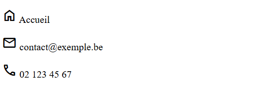
| Font Awesome Free | Bootstrap Icons | Material Symbols | |
|---|---|---|---|
| Une icône s'écrit | <i class="fa-solid fa-house"></i> |
<i class="bi bi-house"></i> |
<span class="material-symbols-outlined">home</span> |
| Logos de marques | Oui (fa-brands) |
Quelques-uns | Non |
| Version payante | Oui (Font Awesome Pro) : seules les icônes Free sont gratuites | Non, tout est gratuit | Non, tout est gratuit |
| Licence | Icônes CC BY 4.0, police SIL OFL 1.1, code MIT | MIT | Apache 2.0 |
Gratuit ne veut pas dire « libre de tout faire » : les licences
Une icône, une photo, une police ou un texte trouvés en ligne ont toujours un auteur, protégé par le droit d'auteur. Par défaut, vous n'avez aucun droit de les réutiliser, même s'ils sont téléchargeables gratuitement. C'est la licence — une sorte de contrat fourni par l'auteur — qui dit ce que vous avez le droit de faire, et à quelles conditions. C'est la suite logique du point sur le grabbing vu en séance 1.
| Licence | Ce que vous pouvez faire | Votre obligation |
|---|---|---|
| © Tous droits réservés | Rien, sans l'autorisation écrite de l'auteur. C'est la situation par défaut, même sans symbole ©. | Demander l'autorisation, ou ne pas l'utiliser. |
| CC0 (domaine public) | Tout, y compris modifier et utiliser commercialement. | Aucune (citer l'auteur reste élégant). |
| CC BY | Utiliser, modifier, y compris commercialement. | Créditer l'auteur et la licence. |
| CC BY-SA | Comme CC BY. | Créditer, et partager vos modifications sous la même licence. |
| CC BY-NC | Utiliser et modifier, pas à des fins commerciales. | Créditer ; interdit sur le site d'une entreprise. |
| CC BY-ND | Utiliser sans modifier (pas de recadrage, pas de filtre). | Créditer. |
| MIT, Apache 2.0, SIL OFL | Licences de logiciels et de polices : utiliser, modifier, y compris commercialement. | Conserver la mention de copyright présente dans les fichiers. |
Ce que cela veut dire pour Font Awesome
- Free ou Pro : le catalogue mélange icônes gratuites et icônes Pro, réservées aux abonnés payants. Utilisez toujours le filtre Free : une icône Pro copiée sans abonnement est une utilisation illégale (et ne s'affichera de toute façon pas avec le lien gratuit).
- Le crédit : la licence CC BY exige de créditer l'auteur. Font Awesome précise que les commentaires déjà présents dans ses fichiers suffisent. Vous n'avez rien à ajouter en utilisant le lien du CDN — mais ne supprimez pas ces commentaires si vous téléchargez les fichiers.
- Les logos de marques (
fa-brands: Instagram, Facebook...) sont des marques déposées. Vous pouvez les utiliser uniquement pour représenter la marque elle-même — par exemple pour un lien vers votre page Instagram — jamais comme logo de votre propre site, ni en les déformant.
Et pour les images trouvées en ligne ?
- Une image trouvée sur Google Images n'est pas libre par défaut. Dans Google Images, le menu Outils → Droits d'usage → Licences Creative Commons filtre les résultats.
- Des banques d'images comme Wikimedia Commons indiquent la licence sur chaque fichier ; d'autres (Unsplash, Pexels) ont leur propre licence, à lire avant usage.
- Méfiez-vous de l'expression « libre de droits » : elle signifie souvent royalty free, c'est-à-dire qu'on paie une fois pour un usage illimité — pas que c'est gratuit.
Quand une licence demande un crédit (CC BY, CC BY-SA...), on l'écrit sous l'image ou dans le pied de page, avec l'auteur, la source et la licence :
Exemple en HTML :
<img src="images/crepes.png" alt="Une pile de crêpes sur une assiette" width="150">
<p>
Photo : « Crêpes » par Jean Dupont, via Wikimedia Commons,
licence <a href="https://creativecommons.org/licenses/by/4.0/deed.fr" target="_blank" rel="noopener noreferrer">CC BY 4.0</a>.
</p>Exemple en rendu navigateur :
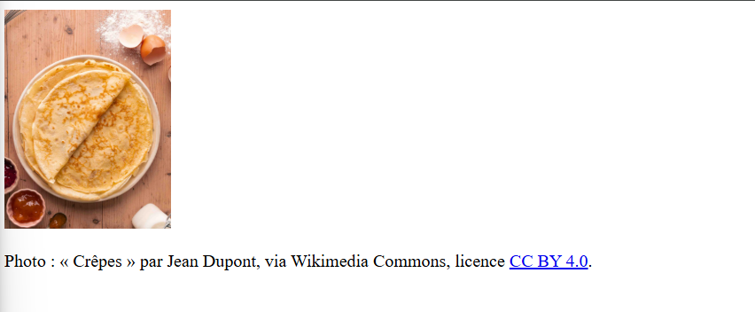
3. Le <body> : les balises sémantiques
Le mot sémantique vient du grec sêma, « le signe » : il désigne tout ce qui a trait au sens. Une balise sémantique ne se contente pas de délimiter une zone, elle dit ce qu'elle contient — un peu comme les étiquettes sur des boîtes de déménagement : « Cuisine », « Chambre », plutôt que des cartons tous identiques et muets.
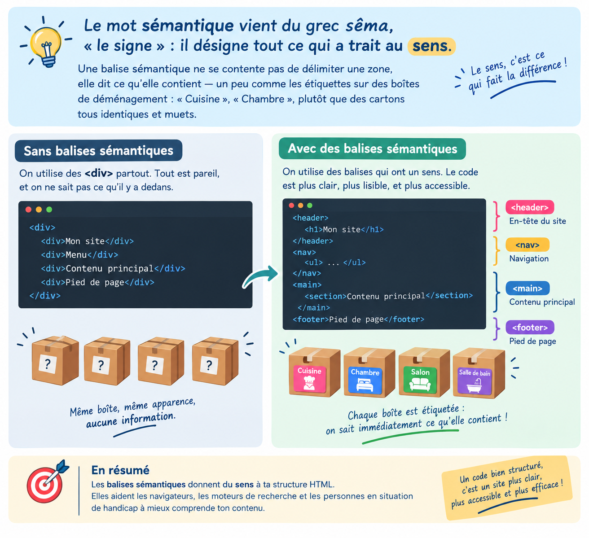
Jusqu'ici, pour structurer une page, vous avez utilisé des titres et des paragraphes. Mais pour délimiter de grandes zones — l'en-tête du site, la navigation, le contenu principal — il vous manquait un outil. HTML5 propose des balises qui portent un sens, et pas seulement une boîte vide.
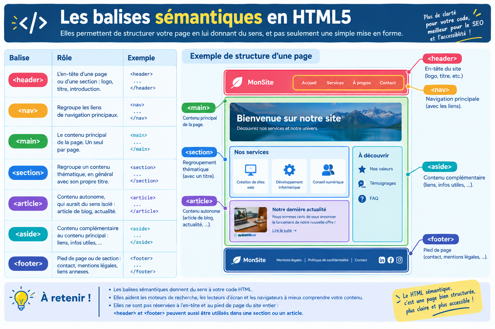
On retrouve presque toujours la même organisation, de haut en bas :
<body>
├── <header> l'en-tête : logo, titre du site...
│ └── <nav> ...et le menu de navigation
│
├── <main> le contenu principal (un seul par page)
│ ├── <section> un thème, avec son titre
│ │ └── <article> un contenu autonome
│ └── <aside> un contenu secondaire, à côté
│
└── <footer> le pied de page| Balise | Rôle |
|---|---|
<header> |
L'en-tête d'une page ou d'une section : logo, titre, introduction. |
<nav> |
Regroupe les liens de navigation principaux. |
<main> |
Le contenu principal de la page. Un seul par page. |
<section> |
Regroupe un contenu thématique, en général avec son propre titre. |
<article> |
Un contenu autonome, qui aurait du sens isolé : un article de blog, une actualité. |
<aside> |
Un contenu lié, mais secondaire : encadré, note, publicité. |
<footer> |
Le pied d'une page ou d'une section : contact, mentions légales, liens annexes. |
<header> : l'en-tête
Le <header> est la zone d'accueil, en haut de la
page. On y retrouve en général :
- le logo du site (une image, souvent cliquable vers l'accueil) ;
- le nom du site, parfois dans le
<h1>, et un slogan ; - le menu de navigation
(
<nav>, juste après).
Exemple en HTML :
<header>
<img src="../images/logo_creperie.png" alt="Logo de La Crêperie" width="80">
<h1>La Crêperie</h1>
<p>Des crêpes bretonnes au coeur d'Evere</p>
</header>Exemple en rendu navigateur :
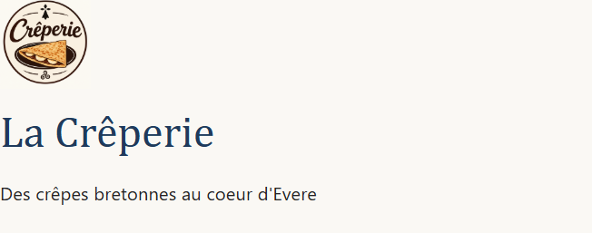
Le <header> d'une page est généralement
identique sur toutes les pages du site : on le copie
d'une page à l'autre. Un <article> peut aussi
avoir son propre <header> (titre et date de
l'article, par exemple).
<nav> : le menu de navigation
<nav> regroupe les liens principaux
qui permettent de se déplacer dans le site : Accueil, Services,
Contact... Il se place le plus souvent dans le
<header>. Il se construit avec deux ingrédients
déjà connus :
- des liens
<a>(détaillés juste après) ; - une liste
<ul>/<li>(séance 2) : un menu est bien une liste de liens.
Exemple en HTML :
<header>
<a href="index.html">
<img src="../logo/logo_creperie.png" alt="La Crêperie — accueil" width="60">
</a>
<nav>
<ul>
<li><a href="index.html">Accueil</a></li>
<li><a href="pages/carte.html">La carte</a></li>
<li><a href="pages/contact.html">Contact</a></li>
</ul>
</nav>
</header>Exemple en rendu navigateur :
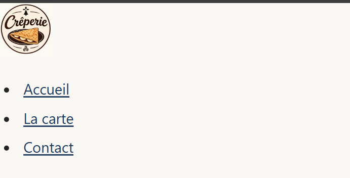
Deux choses à remarquer. D'abord, le logo est placé
à l'intérieur d'un <a> : toute
l'image devient cliquable et ramène à l'accueil — une convention
que tous les visiteurs connaissent. Son alt décrit
alors la destination (« accueil »), pas seulement
l'image. Ensuite, sans CSS, le menu ressemble à une simple liste à
puces, verticale : c'est le CSS qui en fera une barre horizontale,
en séance 7.
Les hyperliens : la balise <a>
Vous avez déjà écrit des chemins en séance 1 (pour vos images et
vos feuilles de style) et vu la balise <a> en
passant. Voici comment l'utiliser pour de vrai : un lien est une
balise par paire, avec un attribut
href (hypertext reference) qui pointe vers la
destination. Ce qui est entre les deux balises — du texte ou une
image — devient cliquable.
Les liens ne se trouvent pas que dans le menu : on en place
partout — dans un paragraphe, dans le pied de page,
sur une image, sur un bouton « Réserver ». Selon ce que vous écrivez
dans href, la destination change :
| Destination | On écrit |
|---|---|
| Une autre page de votre site | <a href="contact.html"> — chemin
relatif, vu en séance 1 |
| Un autre site | <a href="https://exemple.be"> — chemin
absolu |
| Une section de la page actuelle | <a href="#section"> — une
ancre interne
|
| Une section d'une autre page | <a href="page.html#section"> |
| Une adresse e-mail | <a href="mailto:contact@exemple.be"> |
| Un fichier à télécharger | <a href="brochure.pdf" download> |
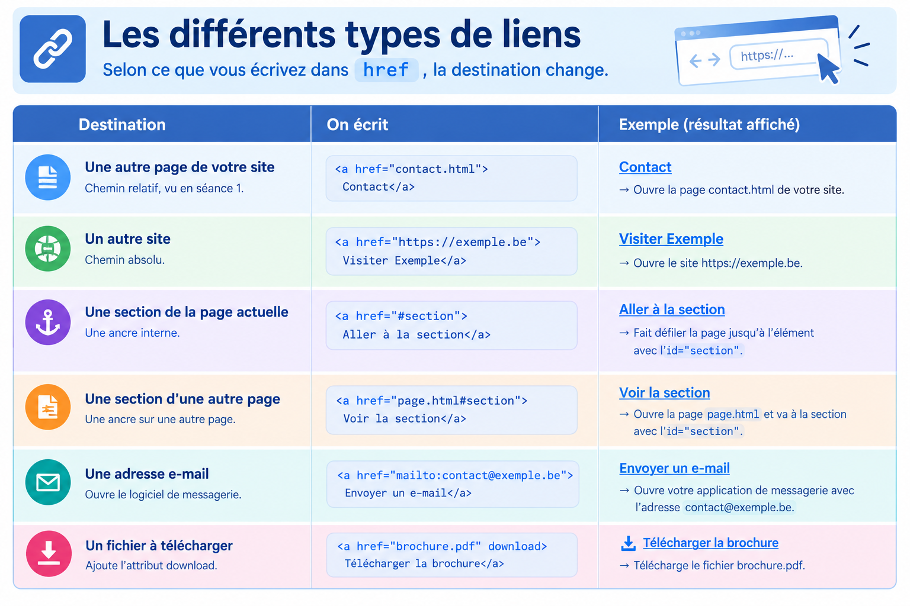
Vers une autre page de votre site
On utilise un chemin relatif, exactement comme pour une image : on part du fichier où l'on se trouve.
Exemple en HTML :
<p>
Découvrez <a href="pages/carte.html">notre carte des crêpes</a>
ou consultez <a href="pages/contact.html">nos horaires</a>.
</p>Exemple en rendu navigateur :
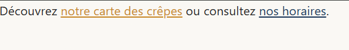
Vers un autre site
On utilise un chemin absolu : l'URL complète,
commençant par https://. Pour un site externe, on ouvre
souvent le lien dans un nouvel onglet avec
target="_blank", pour que le visiteur ne quitte pas
votre site.
Exemple en HTML :
<p>
Nos crêpes sont faites avec de la farine
<a href="https://fr.wikipedia.org/wiki/Sarrasin" target="_blank" rel="noopener noreferrer">de sarrasin</a>.
</p>Exemple en rendu navigateur :
Vers une section de la page actuelle : les ancres
Une ancre interne fait défiler la page jusqu'à un
élément précis. Deux étapes : on donne un id à
l'élément ciblé, puis on écrit href="# suivi de cet
id. C'est exactement ce que fait le sommaire en haut de
cette page. Cliquez sur les liens dans le rendu ci-dessous :
Exemple en HTML :
<nav>
<a href="#carte">La carte</a> |
<a href="#contact">Contact</a>
</nav>
<h2 id="carte">La carte</h2>
<p>Crêpe au sucre, crêpe au chocolat, galette complète...</p>
<p>(beaucoup de contenu)</p>
<p>(encore du contenu)</p>
<p>(toujours du contenu)</p>
<h2 id="contact">Contact</h2>
<p>Rue de l'Exemple 12, 1140 Evere.</p>
<p><a href="#">Retour en haut</a></p>Exemple en rendu navigateur :
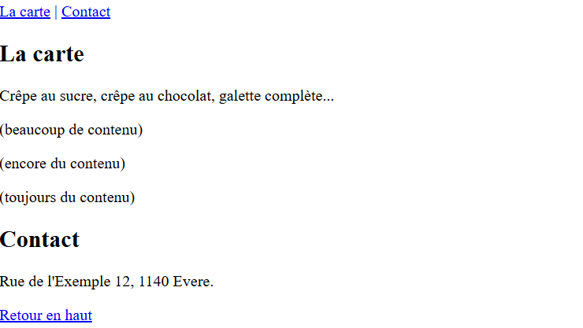
Vers une section d'une autre page
On combine les deux : le chemin vers la page, puis
# et l'id de la section visée. La page
s'ouvre directement au bon endroit.
<a href="pages/contact.html#horaires">Voir nos horaires d'ouverture</a>Exemple réel : le squelette d'une page en séance 1 — ce lien ouvre la séance 1 directement à la bonne section.
Écrire un e-mail : mailto:
Un lien mailto: ouvre le logiciel de messagerie du
visiteur (Outlook, Gmail...) avec l'adresse déjà remplie. On peut
même pré-remplir le sujet avec ?subject=. Pour un
numéro de téléphone, le principe est le même avec
tel: — très pratique sur smartphone, où un clic lance
l'appel.
Exemple en HTML :
<p><a href="mailto:contact@exemple.be">Nous écrire</a></p>
<p><a href="mailto:contact@exemple.be?subject=Réservation">Réserver une table par e-mail</a></p>
<p><a href="tel:+3221234567">Nous appeler : 02 123 45 67</a></p>Exemple en rendu navigateur :
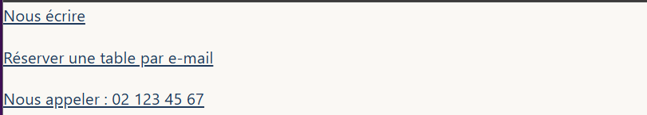
Télécharger un fichier : download
Par défaut, un lien vers un PDF l'ouvre dans le navigateur.
L'attribut download (sans valeur) propose plutôt de
l'enregistrer sur l'ordinateur du visiteur. Pensez
à indiquer le format et le poids dans le texte du lien.
Exemple en HTML :
<a href="documents/brochure.pdf" download>
Télécharger notre carte (PDF, 2 Mo)
</a>Exemple en rendu navigateur :
<main> : le contenu principal
<main> contient ce qui est propre à cette
page : ce qui change d'une page à l'autre. Tout ce qui se
répète sur chaque page (en-tête, menu, pied de page) reste en
dehors.
- Un seul
<main>par page. - Il se place directement dans le
<body>, entre le<header>et le<footer>— jamais à l'intérieur de l'un d'eux.
Exemple en HTML :
<header>
<h1>La Crêperie</h1>
</header>
<main>
<h2>Bienvenue</h2>
<p>Installez-vous, les crêpes arrivent !</p>
</main>Exemple en rendu navigateur :
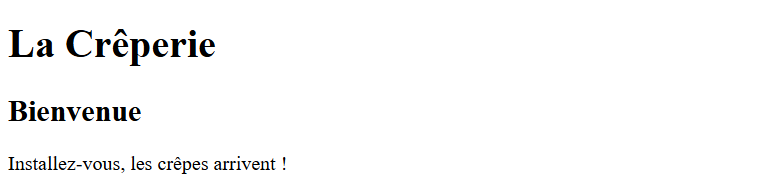
Dans le rendu, rien ne distingue <main> : il est
pourtant précieux pour les lecteurs d'écran, qui proposent un
raccourci « aller au contenu principal » pour éviter de réécouter
le menu à chaque page.
<section> : regrouper par thème
Une <section> regroupe un ensemble de contenus
sur un même thème. Elle commence presque toujours
par un titre (<h2>,
<h3>...).
Quand l'utiliser ? Petit test : si la partie pourrait apparaître comme une ligne dans le sommaire de la page, c'est une section. « Nos crêpes », « Nos horaires », « Qui sommes-nous ? » sont trois sections.
Exemple en HTML :
<main>
<section>
<h2>Nos crêpes</h2>
<p>Sucrées ou salées, toutes préparées à la minute.</p>
</section>
<section>
<h2>Nos horaires</h2>
<p>Du mardi au dimanche, de 11h à 22h.</p>
</section>
</main>Exemple en rendu navigateur :
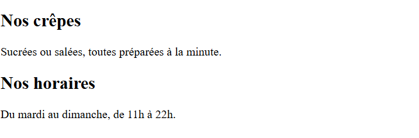
<article> : un contenu autonome
Un <article> représente un contenu
complet et autonome, qui garderait tout son sens si
on le sortait de la page : un article de blog, une actualité, une
fiche produit, un avis client, une recette.
Quand l'utiliser ? Petit test : pourriez-vous copier ce bloc seul sur un autre site, ou le partager sur un réseau social, sans qu'il perde son sens ? Si oui, c'est un article. Les articles se retrouvent souvent à plusieurs, dans une section.
Exemple en HTML :
<section>
<h2>Nos actualités</h2>
<article>
<h3>Nouvelle crêpe du mois : la pomme-caramel</h3>
<p>Publié le 2 octobre 2026</p>
<p>Pommes caramélisées au beurre salé et une boule de glace vanille.</p>
</article>
<article>
<h3>Fermeture exceptionnelle</h3>
<p>Publié le 15 octobre 2026</p>
<p>La crêperie sera fermée le 1er novembre.</p>
</article>
</section>Exemple en rendu navigateur :
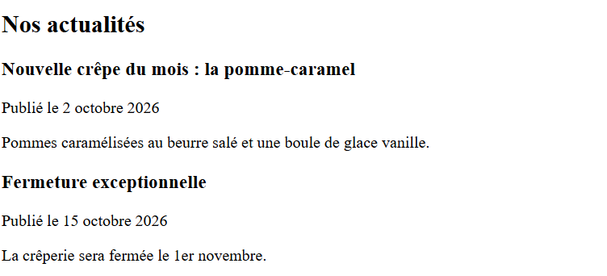
Distinction entre paragraphe, section et article
-
<section>regroupe des contenus liés à un même thème, par exemple une rubrique « Actualités ». -
<article>représente un contenu autonome, comme un article de blog ou une actualité. Il peut se trouver dans une<section>ou directement dans<main>. -
<p>représente un paragraphe de texte. Il peut se trouver dans une section, un article ou un autre élément adapté au contenu.
<aside> : un contenu secondaire
<aside> contient une information
liée au contenu principal, mais
secondaire : si on la supprimait, la page resterait
compréhensible.
Quand l'utiliser ? Pour un encadré « Le saviez-vous ? »,
une barre latérale avec des liens connexes, une définition, une
publicité. Les encadrés de cette page-ci (comme
« Et <div>, alors ? » juste au-dessus) sont des
<aside>.
Exemple en HTML :
<main>
<h2>Nos galettes</h2>
<p>La galette complète : jambon, fromage et oeuf.</p>
<aside>
<h3>Le saviez-vous ?</h3>
<p>En Bretagne, une galette se fait avec de la farine de sarrasin, une crêpe avec de la farine de froment.</p>
</aside>
</main>Exemple en rendu navigateur :
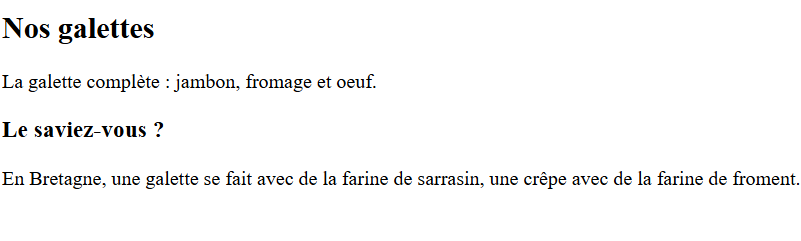
Sans CSS, l'<aside> s'affiche à la suite du reste,
comme un bloc ordinaire. C'est le CSS qui le placera sur le côté ou
dans un encadré coloré.
<footer> : le pied de page
Le <footer> ferme la page. Comme le
<header>, il est généralement identique sur toutes
les pages.
Qu'y met-on ? Les informations qu'on cherche « en
bas » : coordonnées, copyright, mentions légales, liens vers les
réseaux sociaux, plan du site. Un <article> peut
aussi avoir son propre <footer> (auteur,
catégorie).
Exemple en HTML :
<footer>
<p>© 2026 La Crêperie — Rue de l'Exemple 12, 1140 Evere</p>
<p>
<a href="mailto:contact@exemple.be">contact@exemple.be</a> |
<a href="pages/mentions-legales.html">Mentions légales</a>
</p>
</footer>Exemple en rendu navigateur :
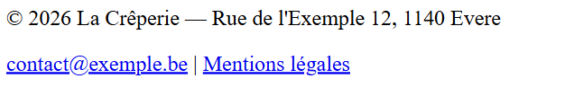
La page complète
Voici toutes les pièces assemblées dans une seule page, de haut en bas. Faites défiler le rendu pour la parcourir.
Exemple en HTML :
<!DOCTYPE html>
<html lang="fr">
<head>
<meta charset="UTF-8">
<meta name="viewport" content="width=device-width, initial-scale=1.0">
<title>La Crêperie</title>
<link rel="stylesheet" href="css/style.css">
<link rel="icon" type="image/png" href="icons/favicon.png">
</head>
<body>
<header>
<a href="index.html">
<img src="../logo/logo_creperie.png" alt="La Crêperie — accueil" width="60">
</a>
<h1>La Crêperie</h1>
<nav>
<ul>
<li><a href="index.html">Accueil</a></li>
<li><a href="pages/carte.html">La carte</a></li>
<li><a href="pages/contact.html">Contact</a></li>
</ul>
</nav>
</header>
<main>
<section>
<h2>Nos crêpes</h2>
<p>Sucrées ou salées, toutes préparées à la minute.</p>
</section>
<section>
<h2>Nos actualités</h2>
<article>
<h3>Nouvelle crêpe du mois</h3>
<p>Découvrez la pomme-caramel au beurre salé.</p>
</article>
<article>
<h3>Fermeture exceptionnelle</h3>
<p>La crêperie sera fermée le 1er novembre.</p>
</article>
</section>
<aside>
<h2>Le saviez-vous ?</h2>
<p>La galette se fait avec de la farine de sarrasin.</p>
</aside>
</main>
<footer>
<p>© 2026 La Crêperie</p>
<a href="mailto:contact@exemple.be">Nous contacter</a>
<a href="pages/mentions-legales.html">Mentions légales</a>
</footer>
</body>
</html>Exemple en rendu navigateur :
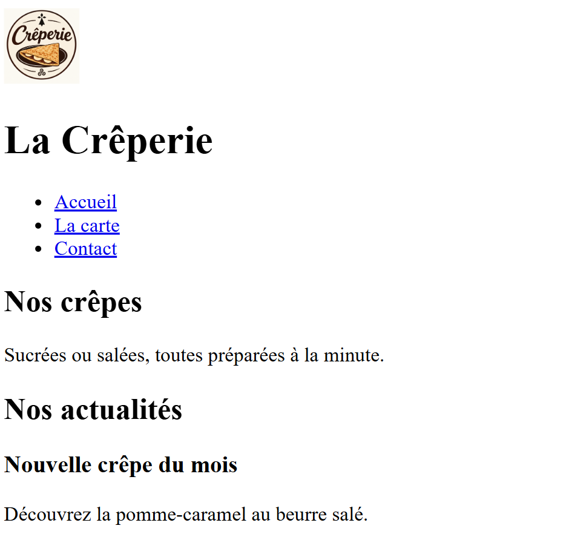
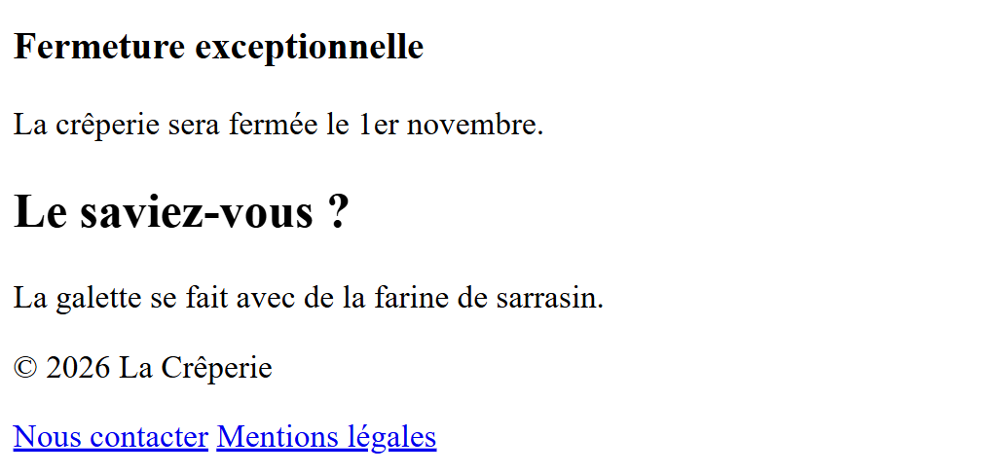
4. Les médias : images, vidéo, audio, documents
Une page ne contient pas que du texte. Vous savez déjà insérer des images ; voyons les autres types de fichiers qu'une page peut afficher ou proposer : la vidéo, le son et les documents.
Rappel : les images et leurs formats
Vous connaissez déjà <img src alt> depuis la
séance 1. Un mot sur le choix du format :
| Format | Quand l'utiliser |
|---|---|
JPEG (.jpg) |
Photos : beaucoup de couleurs, dégradés. Bonne compression. |
PNG (.png) |
Logos, captures d'écran, images avec transparence. |
SVG (.svg) |
Icônes, logos simples : vectoriel, net à toutes les tailles. |
WebP (.webp) |
Format récent, compression supérieure au JPEG et au PNG, de plus en plus utilisé. |
GIF (.gif) |
Petites animations. Peu de couleurs : à éviter pour les photos. |
Le poids d'une image (son nombre de kilooctets, pas ses dimensions en pixels) a un impact direct sur la vitesse de chargement de votre page. Avant de mettre une photo en ligne, redimensionnez-la à la taille où elle sera réellement affichée : inutile de charger une image de 4000 pixels de large pour l'afficher en 300 pixels.
La vidéo : <video>
<video> est une balise par paire.
L'attribut controls affiche les commandes de lecture
(lecture, pause, volume, plein écran), et la balise orpheline
<source> indique le fichier et son format. On peut
proposer plusieurs <source> : le navigateur prend
la première qu'il sait lire.
| Format | type |
Remarque |
|---|---|---|
MP4 (.mp4) |
video/mp4 |
Le plus répandu, lu par tous les navigateurs. |
WebM (.webm) |
video/webm |
Format ouvert, souvent plus léger. |
Exemple en HTML :
<video controls width="400" poster="../images/apercu_video.png.jpg">
<source src="../videos/foret.mp4" type="video/mp4">
</video>Exemple en rendu navigateur :
Dans l'aperçu, seule la version MP4 est fournie : elle est lue par tous les navigateurs.
Le texte entre les balises (« Votre navigateur ne sait pas lire... ») ne s'affiche que si aucun des formats proposés n'est supporté — un filet de sécurité, rarement visible en pratique.
| Attribut | Effet |
|---|---|
width |
La largeur d'affichage, en pixels. |
poster |
Une image affichée avant le lancement de la lecture. |
muted |
Son coupé au démarrage. |
loop |
Relance la lecture en boucle, une fois terminée. |
autoplay |
À éviter : une lecture automatique, avec son, surprend et agace le visiteur. |
L'audio : <audio>
<audio> fonctionne exactement comme
<video>, sans image : controls pour
les commandes, <source> pour le fichier.
| Format | type |
Remarque |
|---|---|---|
MP3 (.mp3) |
audio/mpeg |
Le plus répandu, lu partout. |
OGG (.ogg) |
audio/ogg |
Format ouvert et léger. |
WAV (.wav) |
audio/wav |
Non compressé : excellente qualité, mais très lourd. |
Exemple en HTML :
<audio controls>
<source src="audio/pastel_bounce.mp3" type="audio/mpeg">
</audio>Exemple en rendu navigateur :
Les documents
Un menu de restaurant, une brochure, un formulaire d'inscription à
imprimer : ces fichiers ne sont pas des pages Web. On ne les
« affiche » pas comme une image, on propose au visiteur de les
ouvrir ou de les télécharger avec
un lien <a>, vu plus haut.
| Format | Remarque |
|---|---|
PDF (.pdf) |
Le format idéal : s'ouvre directement dans tous les navigateurs, et garde la même mise en page partout. |
Word, Excel (.docx, .xlsx) |
Nécessitent un logiciel : seront téléchargés, pas affichés. Préférez un PDF. |
Archive (.zip) |
Pour regrouper plusieurs fichiers en un seul téléchargement. |
Exemple en HTML :
<p>
<a href="documents/carte.pdf" target="_blank" rel="noopener noreferrer">Ouvrir la carte (PDF, 2 Mo)</a>
</p>
<p>
<a href="documents/carte.pdf" download>Télécharger la carte (PDF, 2 Mo)</a>
</p>
<iframe src="documents/carte.pdf" width="500" height="300" title="Carte de la crêperie (PDF)"></iframe>Exemple en rendu navigateur :
Dans l'aperçu, le PDF de la grille d'évaluation du cours remplace
documents/carte.pdf.
Trois façons de proposer un document : l'ouvrir dans un nouvel
onglet, le télécharger (download), ou l'afficher
directement dans la page avec une <iframe>. Les
deux premières sont les plus simples et les plus fiables, notamment
sur téléphone.
Intégrer une autre page : <iframe>
Une <iframe> (inline frame, « cadre en
ligne ») est une fenêtre découpée dans votre page,
à travers laquelle on voit une autre page Web. Le
contenu affiché ne vous appartient pas : il est chargé directement
depuis l'autre site, qui reste maître de ce qu'il montre. C'est une
balise par paire, qu'on laisse vide.
| Attribut | Rôle |
|---|---|
src |
L'adresse de la page à afficher (chemin absolu pour un autre site, relatif pour un fichier du vôtre). |
title |
Obligatoire pour l'accessibilité : dit au lecteur d'écran ce que contient le cadre (« Plan d'accès », « Vidéo de présentation »). |
width / height |
La taille du cadre, en pixels. |
loading="lazy" |
Ne charge le cadre que lorsque le visiteur fait défiler la page jusqu'à lui : la page s'affiche plus vite. |
allowfullscreen |
Autorise le plein écran (utile pour une vidéo). |
Exemple : un plan d'accès
Sur openstreetmap.org, cherchez une
adresse, cliquez sur Partager (l'icône à droite), puis
copiez le code HTML proposé : c'est une
<iframe> prête à l'emploi. Google Maps propose la
même chose : c'est le deuxième exemple ci-dessous. Pratique pour la
page « infos » d'un site vitrine.
Avec OpenStreetMap
Exemple en HTML :
<h2>Plan d'accès</h2>
<iframe src="https://www.openstreetmap.org/export/embed.html?bbox=4.4050%2C50.8700%2C4.4130%2C50.8742&layer=mapnik&marker=50.8721%2C4.4090"
width="400" height="250" title="Plan d'accès à l'EAFC Evere" loading="lazy"></iframe>Exemple en rendu navigateur :
Avec Google Maps
Sur Google Maps, cherchez l'adresse,
cliquez sur Partager, choisissez l'onglet Intégrer une
carte, puis Copier le contenu HTML. Google vous donne
une <iframe> dont l'adresse commence par
https://www.google.com/maps/embed?pb=..., suivie d'une
longue suite de caractères : copiez-la telle quelle.
Une adresse plus courte fonctionne aussi, et se lit plus
facilement : https://www.google.com/maps?q= suivi de
l'adresse, puis &output=embed.
Exemple en HTML :
<h2>Plan d'accès</h2>
<iframe src="https://www.google.com/maps?q=EAFC%20Evere%2C%20Avenue%20Constant%20Permeke%204%2C%201140%20Evere&output=embed"
width="400" height="250" title="Plan d'accès à l'EAFC Evere"
loading="lazy" referrerpolicy="no-referrer-when-downgrade"
allowfullscreen></iframe>Exemple en rendu navigateur :
Exemple : une vidéo YouTube
Une vidéo YouTube s'intègre toujours avec une
<iframe> : c'est la seule façon de la montrer dans
votre page. Mais il faut lui donner la bonne adresse,
car une même vidéo en a plusieurs :
- l'adresse de la barre du navigateur
(
youtube.com/watch?v=...) mène à la page YouTube complète, avec les commentaires et les suggestions. Cette page-là ne s'affiche pas dans une<iframe>: le cadre reste vide, avec le message « www.youtube.com refused to connect » ; - l'adresse prévue pour l'intégration mène au lecteur
seul, et contient
/embed/. C'est celle-là qu'il faut mettre danssrc.
| Adresse | C'est... | Dans une <iframe> ? |
|---|---|---|
youtube.com/watch?v=NPbVrgRBtBY |
La page YouTube (barre d'adresse) | Non : cadre vide |
youtu.be/NPbVrgRBtBY |
Le lien court du bouton Partager, qui renvoie vers la page | Non : cadre vide |
youtube.com/embed/NPbVrgRBtBY |
Le lecteur seul, prévu pour être intégré | Oui |
Le plus sûr : sous la vidéo, cliquez sur Partager →
Intégrer et copiez le code proposé tel quel :
il contient déjà la bonne adresse. La partie qui change d'une vidéo à
l'autre est l'identifiant (ici
NPbVrgRBtBY), celui qu'on lit après v= dans
la barre d'adresse.
Exemple en HTML :
<iframe width="560" height="315"
src="https://www.youtube.com/embed/NPbVrgRBtBY"
title="Compilation de chats qui miaulent"
referrerpolicy="strict-origin-when-cross-origin"
allowfullscreen></iframe>Exemple en rendu navigateur :
Récapitulatif
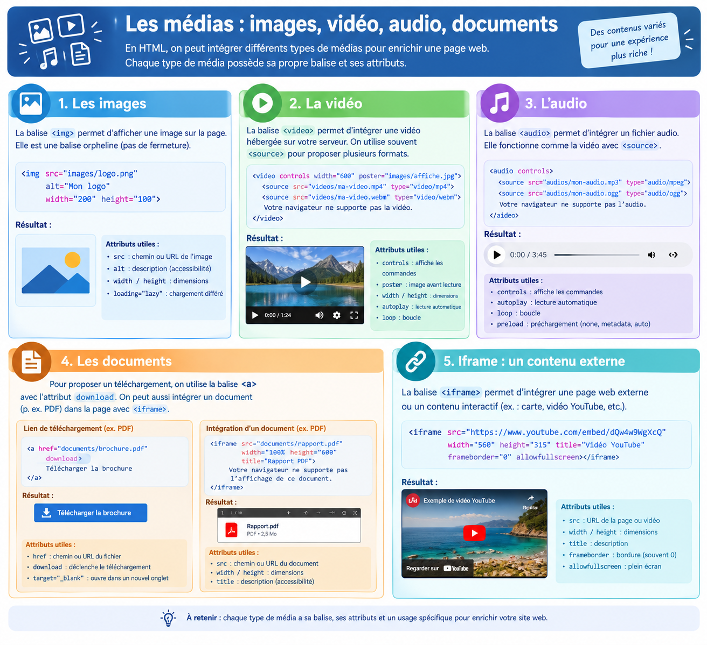
5. Approfondir l'organisation d'un site
En séance 1, vous avez vu une arborescence simple :
index.html, un dossier css/, un dossier
images/. Avec tout ce que vous venez de voir — plusieurs
pages reliées par des liens, un favicon, des vidéos, des sons, des
documents à télécharger — un site grandit vite. Voici une
organisation plus réaliste, celle de votre futur projet 2.
mon-site/
├── index.html
│
├── pages/
│ ├── contact.html
│ └── services.html
│
├── css/
│ └── style.css
│
├── js/
│ └── script.js
│
├── images/
│ ├── logo.png
│ └── equipe.jpg
│
├── icons/
│ └── favicon.png
│
├── videos/
│ └── presentation.mp4
│
├── audio/
│ └── bienvenue.mp3
│
├── documents/
│ └── brochure.pdf
│
└── fonts/
└── ma-police.woff2| Dossier | Contenu |
|---|---|
pages/ |
Les pages autres que l'accueil — qui, elle, reste
index.html à la racine.
|
css/ |
Les feuilles de style, reliées par
<link>, vues en détail à partir de la
séance 5.
|
js/ |
Les scripts JavaScript. Hors programme de ce cours, mais vous recroiserez ce dossier dans d'autres UE. |
images/ |
Photos et logos. |
icons/ |
Le favicon et les petites icônes du site, séparés des photos pour s'y retrouver. |
videos/ / audio/ |
Les fichiers utilisés par <video> et
<audio>.
|
documents/ |
Les fichiers à ouvrir ou télécharger : PDF, brochures. |
fonts/ |
Les polices personnalisées, vues à partir de la séance 6. |
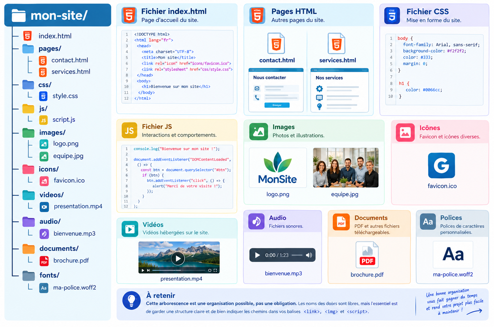
Avec cette organisation, attention aux chemins : depuis
pages/contact.html, il faut remonter
d'un dossier pour atteindre les images ou revenir à l'accueil.
<!-- dans index.html (à la racine) -->
<a href="pages/contact.html">Contact</a>
<img src="images/logo.png" alt="...">
<!-- dans pages/contact.html (un dossier plus bas) -->
<a href="../index.html">Accueil</a>
<img src="../images/logo.png" alt="...">6. Les tableaux de données
Vous avez déjà vu des dizaines de tableaux sur ce site — c'est le moment de comprendre comment ils sont construits. Un tableau sert à présenter des données organisées en lignes et en colonnes : des tarifs, des horaires, un comparatif.
| Balise | Rôle |
|---|---|
<table> |
Le tableau complet. |
<caption> |
Le titre du tableau, annoncé en premier par les lecteurs d'écran. |
<thead> / <tbody> |
Regroupent respectivement la ligne d'en-tête et les lignes de données. |
<tr> |
Une ligne (table row). |
<th> |
Une cellule d'en-tête (table header), avec un
attribut scope. |
<td> |
Une cellule de donnée (table data). |
Exemple en HTML :
<table>
<caption>Horaires d'ouverture</caption>
<thead>
<tr>
<th scope="col">Jour</th>
<th scope="col">Horaires</th>
</tr>
</thead>
<tbody>
<tr>
<th scope="row">Lundi</th>
<td>9h – 18h</td>
</tr>
<tr>
<th scope="row">Dimanche</th>
<td>Fermé</td>
</tr>
</tbody>
</table>Exemple en rendu navigateur :
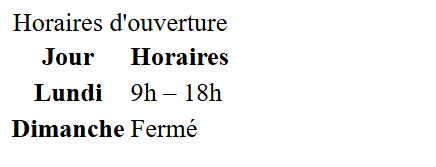
Sans CSS, un tableau n'a aucune bordure : les
données sont simplement alignées. Les cellules
<th> sont en gras et centrées par défaut. Les
bordures et les couleurs viendront avec le CSS.
Fusionner des cellules
Deux attributs permettent à une cellule de s'étendre sur plusieurs colonnes ou plusieurs lignes :
| Attribut | Effet |
|---|---|
colspan="2" |
La cellule s'étend sur 2 colonnes. |
rowspan="2" |
La cellule s'étend sur 2 lignes. |
Exemple en HTML :
<table>
<caption>Chevaux de l'écurie</caption>
<tbody>
<tr>
<th scope="col">Nom</th>
<th scope="col">Robe</th>
</tr>
<tr>
<th rowspan="2" scope="rowgroup">Jument</th>
<td>Bai</td>
</tr>
<tr>
<td>Alezan</td>
</tr>
<tr>
<td colspan="2">Total : 2 juments</td>
</tr>
</tbody>
</table>Exemple en rendu navigateur :
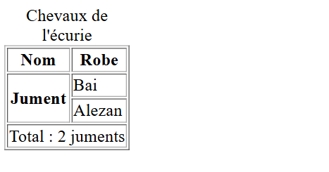
Sur l'image, des bordures ont été ajoutées uniquement pour
que vous voyiez les cases fusionnées : sans CSS, un tableau
n'a pas de bordures. Pour les voir pendant vos essais, recopiez cette
règle dans votre css/style.css (vous la comprendrez en
séance 5) :
table, th, td {
border: 1px solid black;
}
Sur Internet, vous croiserez parfois l'ancien attribut
<table border="1"> : il est obsolète
et le validateur du W3C le refuse.
Récapitulatif
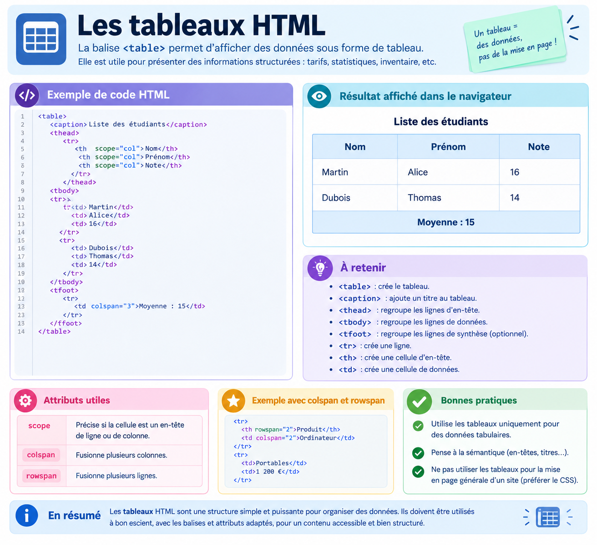
Exercice
Dans exercice-03/index.html, construisez ce tableau
de données astronomiques, inspiré d'un classique du genre :
| Planète | Distance au Soleil (millions de km) | Nombre de lunes |
|---|---|---|
| Mercure | 58 | 0 |
| Terre | 150 | 1 |
| Jupiter | 778 | 95 |
- Reproduisez ce tableau en HTML :
<table>,<caption>,<thead>,<tbody>, avec lesscopecorrects. - Ajoutez une ligne pour Mars (228 millions de km, 2 lunes).
- Passez votre tableau au validateur du W3C.
La solution se trouve dans la partie Exercices, en fin de séance.
7. Les formulaires
Jusqu'ici, toutes vos pages font circuler l'information dans un seul sens : du serveur vers le visiteur. Un formulaire inverse le sens : il permet au visiteur de vous envoyer des informations — un message, une réservation, une inscription, une recherche.
Rappel : le client demande, le serveur répond
En séance 1, vous avez vu le modèle client / serveur : votre navigateur (le client) envoie une requête HTTP au serveur, qui lui renvoie une réponse (la page). Une requête HTTP précise toujours une méthode, qui dit ce que le client veut faire. Pour les formulaires, deux méthodes nous intéressent :
GET |
POST |
|
|---|---|---|
| Sens | « Donne-moi » : demander une page ou une information. | « Prends ceci » : envoyer des données au serveur. |
| Où vont les données ? | Dans l'URL, visibles :
recherche.html?q=crepe
|
Dans le corps de la requête, invisibles dans l'URL. |
| Usage | Une barre de recherche, des filtres. C'est aussi ce que fait votre navigateur à chaque clic sur un lien. | Un message de contact, une inscription, un mot de passe, une commande. |
| Mise en favori / partage | Possible : tout est dans l'URL. | Impossible. |
Faites l'essai : cherchez « crêpe » sur Google, puis regardez la
barre d'adresse. Vous y lirez ...search?q=crêpe... :
c'est un formulaire envoyé en GET. À l'inverse, quand
vous vous connectez à votre messagerie, votre mot de passe
n'apparaît jamais dans l'URL : il est envoyé en
POST.
La balise <form>
Tout le formulaire se place dans une balise
<form>, avec deux attributs essentiels :
| Attribut | Rôle |
|---|---|
action |
Où envoyer les données : l'adresse du programme, sur le serveur, qui va les recevoir. |
method |
Comment les envoyer : get
(par défaut) ou post. |
Exemple en HTML :
<form action="/envoyer" method="post">
<label for="prenom">Votre prénom</label>
<input type="text" id="prenom" name="prenom">
<button type="submit">Envoyer</button>
</form>Exemple en rendu navigateur :
Seul, <form> n'affiche rien : c'est un conteneur
invisible. Ce sont les éléments qu'il contient — étiquettes, champs,
bouton — qui apparaissent. Voyons-les un par un.
La balise <label> : l'étiquette
Chaque champ a besoin d'une étiquette qui dit ce qu'on attend :
« Votre nom », « Votre e-mail ». On l'associe au champ avec
l'attribut for, qui reprend l'id du
champ. Dans le rendu, cliquez sur le texte
« Votre nom » : le curseur se place dans le champ.
Exemple en HTML :
<label for="nom">Votre nom</label>
<input type="text" id="nom" name="nom">Exemple en rendu navigateur :
La balise <input> et ses types
<input> est une balise orpheline :
c'est le champ de saisie. Son attribut type change
complètement son comportement. Quelques attributs reviennent sur
tous les champs :
| Attribut | Rôle |
|---|---|
id |
Identifiant unique, pour relier le champ à son
<label>.
|
name |
Le nom de la donnée envoyée au serveur.
Sans name, le champ n'est
pas envoyé du tout !
|
placeholder |
Un exemple grisé dans le champ vide. Ne remplace jamais
le <label>. |
value |
Une valeur déjà remplie (ou la valeur envoyée, pour une case à cocher). |
required |
Champ obligatoire : le navigateur bloque l'envoi s'il est vide. |
type="text" : un texte court
Le type par défaut : une seule ligne de texte (nom, ville...).
Exemple en HTML :
<label for="ville">Votre ville</label>
<input type="text" id="ville" name="ville" placeholder="Ex. : Evere">Exemple en rendu navigateur :
type="email" : une adresse e-mail
Le navigateur vérifie le format (présence d'un @...)
avant l'envoi. Sur smartphone, le clavier affiche directement la
touche @.
Exemple en HTML :
<label for="email">Votre e-mail</label>
<input type="email" id="email" name="email" placeholder="nom@exemple.be" required>Exemple en rendu navigateur :
type="password" : un mot de passe
Les caractères tapés sont masqués par des points.
Exemple en HTML :
<label for="mdp">Mot de passe</label>
<input type="password" id="mdp" name="mdp">Exemple en rendu navigateur :
type="tel" : un numéro de téléphone
Aucune vérification de format (les numéros varient selon les pays), mais le smartphone affiche un clavier numérique.
Exemple en HTML :
<label for="telephone">Téléphone</label>
<input type="tel" id="telephone" name="telephone" placeholder="02 123 45 67">Exemple en rendu navigateur :
type="number" : un nombre
Seuls les chiffres sont acceptés, avec des petites flèches pour
augmenter ou diminuer. min et max fixent
les limites.
Exemple en HTML :
<label for="personnes">Nombre de personnes</label>
<input type="number" id="personnes" name="personnes" min="1" max="12" value="2">Exemple en rendu navigateur :
type="date" : une date
Le navigateur affiche un petit calendrier pour choisir la date.
Exemple en HTML :
<label for="jour">Date de réservation</label>
<input type="date" id="jour" name="jour">Exemple en rendu navigateur :
type="checkbox" : des cases à cocher
Plusieurs choix possibles en même temps. Ici, le
<label> se place après la case.
On regroupe les cases dans un <fieldset> (un cadre),
avec un <legend> qui décrit le groupe.
Exemple en HTML :
<fieldset>
<legend>Options</legend>
<input type="checkbox" id="terrasse" name="options" value="terrasse">
<label for="terrasse">Table en terrasse</label>
<input type="checkbox" id="enfant" name="options" value="chaise-enfant">
<label for="enfant">Chaise pour enfant</label>
</fieldset>Exemple en rendu navigateur :
type="radio" : un seul choix parmi plusieurs
Les boutons radio d'un même groupe partagent le
même name : cocher l'un décoche
l'autre. checked coche un bouton par défaut. Essayez
dans le rendu :
Exemple en HTML :
<fieldset>
<legend>Service</legend>
<input type="radio" id="midi" name="service" value="midi" checked>
<label for="midi">Midi</label>
<input type="radio" id="soir" name="service" value="soir">
<label for="soir">Soir</label>
</fieldset>Exemple en rendu navigateur :
| Type | Usage |
|---|---|
url |
Une adresse de site Web, vérifiée par le navigateur. |
time |
Une heure. |
search |
Un champ de recherche. |
range |
Un curseur à glisser entre deux valeurs. |
color |
Un sélecteur de couleur. |
file |
Un bouton pour joindre un fichier. |
La balise <textarea> : un texte long
Pour un message de plusieurs lignes, <input> ne
suffit pas. <textarea> est une balise
par paire (attention, contrairement à
<input>) ; rows indique le nombre de
lignes visibles. Le coin inférieur droit permet de l'agrandir.
Exemple en HTML :
<label for="message">Votre message</label>
<textarea id="message" name="message" rows="4" cols="40"></textarea>Exemple en rendu navigateur :
Les balises <select> et <option> : une liste
déroulante
<select> crée une liste déroulante ; chaque choix
est une <option>. Le texte entre les balises est ce
que voit le visiteur ; l'attribut value est ce qui est
envoyé au serveur. selected choisit
l'option affichée par défaut.
Exemple en HTML :
<label for="sujet">Sujet</label>
<select id="sujet" name="sujet">
<option value="info">Demande d'information</option>
<option value="reservation" selected>Réservation</option>
<option value="avis">Donner mon avis</option>
</select>Exemple en rendu navigateur :
La balise <button> : le bouton
<button> est une balise par paire : son texte est
celui affiché sur le bouton. Son attribut type dit ce
qu'il fait :
type |
Effet |
|---|---|
submit |
Envoie le formulaire (le comportement par défaut). |
reset |
Vide tous les champs. Rarement utile : un clic par erreur efface tout. |
button |
Ne fait rien seul : utilisé avec JavaScript. |
Exemple en HTML :
<form action="/envoyer" method="post">
<input type="text" name="essai" placeholder="Tapez quelque chose">
<button type="reset">Effacer</button>
<button type="submit">Envoyer</button>
</form>Exemple en rendu navigateur :
Tapez quelque chose dans le rendu, puis cliquez sur « Effacer » : le champ se vide. Notez que le style des boutons, sans CSS, dépend du navigateur et du système d'exploitation.
Le formulaire complet
Tous les éléments réunis dans un formulaire de contact :
Exemple en HTML :
<form action="/envoyer" method="post">
<label for="c-nom">Votre nom</label>
<input type="text" id="c-nom" name="nom" required>
<label for="c-email">Votre e-mail</label>
<input type="email" id="c-email" name="email" required>
<fieldset>
<legend>Mode de contact préféré</legend>
<input type="radio" id="c-tel" name="contact" value="tel" checked>
<label for="c-tel">Téléphone</label>
<input type="radio" id="c-mail" name="contact" value="mail">
<label for="c-mail">E-mail</label>
</fieldset>
<label for="c-sujet">Sujet</label>
<select id="c-sujet" name="sujet">
<option value="info">Demande d'information</option>
<option value="reservation">Réservation</option>
</select>
<label for="c-message">Votre message</label>
<textarea id="c-message" name="message" rows="4"></textarea>
<button type="submit">Envoyer</button>
</form>Exemple en rendu navigateur :
Sans CSS, tous les éléments se suivent sur la même ligne tant qu'il
y a de la place : les champs et les étiquettes sont des éléments
« en ligne », comme des mots dans une phrase. C'est le CSS qui les
alignera proprement (le site de ce cours le fait déjà). En
attendant, vous pouvez placer chaque paire étiquette + champ dans
un <p> pour aller à la ligne.
Et quand on clique sur « Envoyer » ?
Dans ce cours, on écrit du HTML et du CSS uniquement : des fichiers statiques (séance 1), sans programme côté serveur. Que se passe-t-il alors avec notre formulaire ? Voici le trajet, étape par étape.
- Le navigateur vérifie les champs : un champ
requiredvide, une adresse e-mail sans@... Il bloque l'envoi et affiche une bulle d'erreur. Cette étape fonctionne sans serveur. - Il rassemble les données sous forme de paires
name=valeur, en utilisant l'attributnamede chaque champ :nom=Alice&email=alice%40exemple.be&sujet=info(le@est encodé en%40). - Il envoie une requête HTTP à l'adresse indiquée
dans
action, avec la méthode indiquée dansmethod. EnPOST, les données voyagent dans le corps de la requête. - Le serveur doit traiter la requête. C'est là que
tout s'arrête pour nous : pour enregistrer les données ou envoyer
un e-mail, il faut un programme côté serveur
(PHP, Python, Node.js...) qui « écoute » à l'adresse
/envoyer. Nous n'en avons pas.
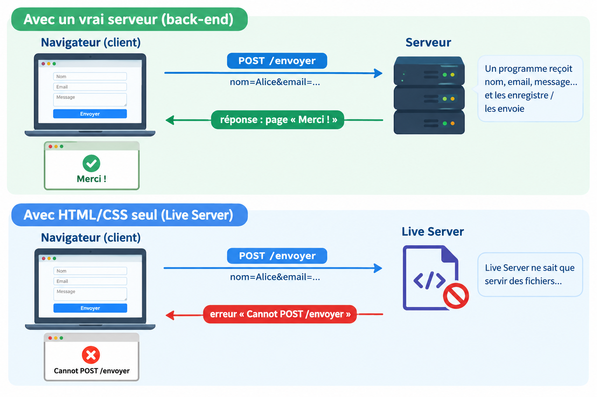
| Situation | Résultat |
|---|---|
Avec Live Server, method="post" |
Une page d'erreur du type « Cannot POST /envoyer » : Live Server reçoit bien la requête, mais ne sait que distribuer des fichiers, pas traiter des données. |
Avec Live Server, method="get" |
Les données apparaissent dans la barre d'adresse :
/envoyer?nom=Alice&email=..., suivies
d'une erreur 404 (le fichier envoyer
n'existe pas).
|
Fichier ouvert par double-clic
(file://) |
Pas de serveur du tout : le navigateur affiche une erreur « fichier introuvable », ou recharge simplement une page. Les données sont perdues. |
Récapitulatif
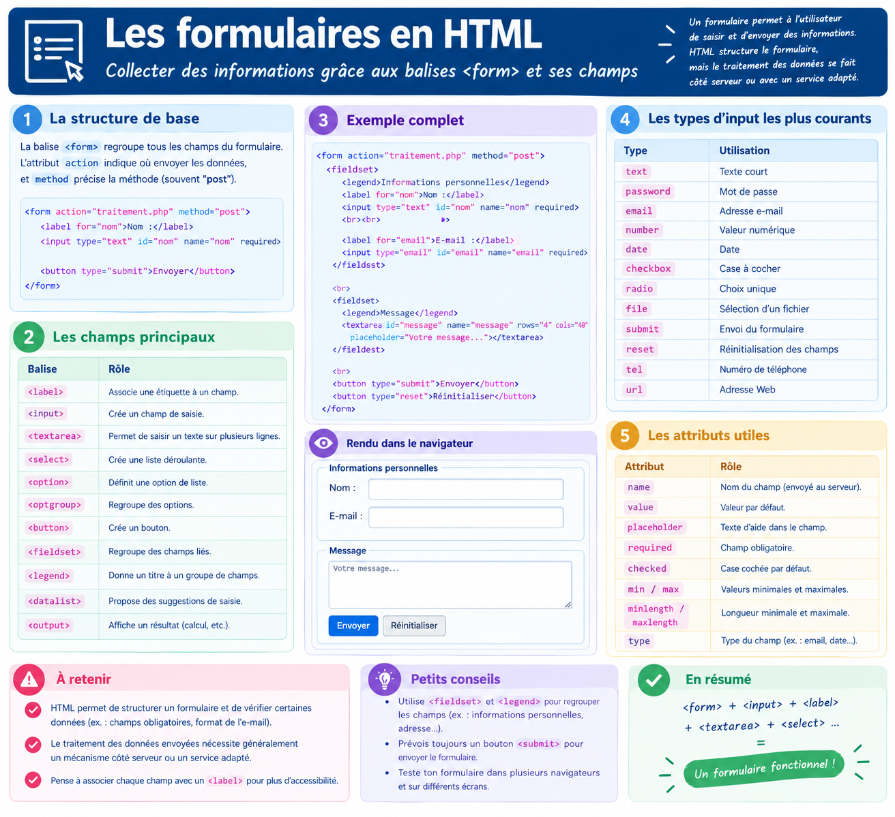
Exercice
Dans exercice-03/formulaire.html, construisez un
formulaire de réservation pour un restaurant fictif :
- Une balise
<form>avecaction="/reserver"etmethod="post". - Un champ Nom (texte) et un champ
E-mail, chacun avec un
<label>associé viafor/id, et unname. - Un champ Nombre de personnes, du bon
typepour une valeur numérique. - Un champ Date de réservation, du bon
typepour une date. - Un groupe de boutons radio « Midi » / « Soir »,
dans un
<fieldset>avec sa<legend>, l'un des deux coché par défaut. - Une liste déroulante « Table en terrasse ? »
avec au moins deux
<option>. - Un
<textarea>pour une remarque facultative. - Un bouton d'envoi.
Terminez en passant votre page au validateur du W3C, puis vérifiez
au clavier (touche Tab) que vous pouvez atteindre et
remplir tous les champs dans un ordre logique.
Bonus : ouvrez la page avec Live Server, remplissez
le formulaire et envoyez-le, l'onglet Réseau de
F12 ouvert. Retrouvez vos données dans la
Charge utile. Remplacez ensuite post par
get et observez la barre d'adresse : quelle différence ?
La solution se trouve dans la partie Exercices, en fin de séance.
8. L'intelligence artificielle
Vous avez sans doute déjà utilisé un assistant IA (Copilot, ChatGPT, Claude...) pour du code, ou vous allez bientôt le faire. Autant poser clairement les règles de ce cours.
Souvenez-vous aussi du point sur le grabbing vu en séance 1 : un texte généré par une IA et collé tel quel n'est pas plus acceptable qu'un texte copié depuis Wikipédia. Le contenu de vos projets doit rester le vôtre.
9. Exercices
Des exercices corrigés pour pratiquer ce que vous avez vu
dans cette séance, du plus simple au plus complet. Ils sont
facultatifs et ne sont pas à rendre : faites-les en
autonomie, pendant les séances à distance ou chez vous. Les seuls travaux
à déposer dans Teams sont ceux décrits dans les séances 2, 4 et 6.
Créez un dossier exercice-03/ et un fichier par exercice
(ex1.html, ex2.html...).
Envie de vous entraîner encore ? Des exercices courts pour chaque balise vous attendent dans les exercices supplémentaires de la séance 3.
Exercice 1 — Écrire un <head> complet
Parties concernées : le head, le favicon, Font Awesome.
Créez la page d'accueil de « La Crêperie » avec un <head> qui contient :
- l'encodage UTF-8 et le viewport ;
- une description : « Crêperie bretonne à Evere » ;
- le titre « La Crêperie — Accueil » ;
- la bibliothèque Font Awesome (version 7.3.1) ;
- votre feuille de style
css/style.css; - le favicon
icons/favicon.png.
Dans le <body>, ajoutez un titre
<h1> « La Crêperie » précédé d'une icône de
maison, et un paragraphe avec une icône d'horloge suivie de
« Ouvert du mardi au dimanche ».
Indice
Trois balises <link>, chacune avec son
rel. Réfléchissez à l'ordre des deux feuilles de
style. Pour l'horloge, cherchez « clock » dans le catalogue
Font Awesome (filtre Free).
Voir la solution
Solution en HTML :
<!DOCTYPE html>
<html lang="fr">
<head>
<meta charset="UTF-8">
<meta name="viewport" content="width=device-width, initial-scale=1">
<meta name="description" content="Crêperie bretonne à Evere">
<title>La Crêperie — Accueil</title>
<link rel="stylesheet" href="https://cdnjs.cloudflare.com/ajax/libs/font-awesome/7.3.1/css/all.min.css">
<link rel="stylesheet" href="css/style.css">
<link rel="icon" type="image/png" href="icons/favicon.png">
</head>
<body>
<h1><i class="fa-solid fa-house" aria-hidden="true"></i> La Crêperie</h1>
<p><i class="fa-solid fa-clock" aria-hidden="true"></i> Ouvert du mardi au dimanche</p>
</body>
</html>Rendu dans le navigateur :
Pourquoi ? Font Awesome est relié
avant css/style.css : en cas de
conflit, c'est la dernière feuille chargée qui gagne, et vos
propres choix doivent primer. Le titre et le favicon ne se voient
que dans l'onglet. Les icônes ont aria-hidden="true"
car le texte à côté suffit.
Exercice 2 — Choisir la bonne balise sémantique
Partie concernée : les balises sémantiques.
Sans écrire de code, indiquez quelle balise vous utiliseriez pour chacun de ces contenus d'un site de restaurant :
- Le logo et le nom du restaurant, tout en haut de chaque page.
- Les liens « Accueil — La carte — Réserver — Contact ».
- La partie « Nos horaires », avec son titre et un tableau.
- Un avis client : son nom, sa note et son commentaire.
- Un encadré « Le saviez-vous ? » sur l'origine des crêpes.
- L'adresse, le copyright et le lien « Mentions légales », tout en bas.
- Tout ce qui est propre à la page « La carte » (ni l'en-tête, ni le pied de page).
Indice
Les sept balises vues dans cette partie servent chacune une fois.
Pour hésiter entre <section> et
<article>, posez-vous la question : ce bloc
aurait-il du sens copié seul sur un autre site ?
Voir la solution
| Contenu | Balise | Pourquoi |
|---|---|---|
| 1. Logo et nom | <header> |
L'en-tête de la page, répété sur tout le site. |
| 2. Liens du menu | <nav> |
Le bloc de navigation principal (souvent dans le header). |
| 3. Nos horaires | <section> |
Un thème avec son titre : il aurait sa ligne dans un sommaire. |
| 4. Avis client | <article> |
Un contenu autonome : il garde son sens seul. |
| 5. Le saviez-vous ? | <aside> |
Lié au sujet, mais secondaire : la page reste compréhensible sans lui. |
| 6. Adresse, copyright | <footer> |
Le pied de page, répété sur tout le site. |
| 7. Contenu propre à la page | <main> |
Le contenu principal, un seul par page. |
Exercice 3 — Structurer une page complète
Parties concernées : les balises sémantiques, les hyperliens.
Construisez la page d'accueil d'un club de sport fictif :
- Un en-tête avec le logo
(
images/logo.png) cliquable versindex.html, et le titre « Club Evere Sport ». - Un menu (une liste) avec trois liens :
« Accueil » (
index.html), « Planning » (pages/planning.html) et « Contact », qui mène à la partie contact de la même page. - Un contenu principal avec une partie « Nos activités » contenant deux actualités (titre + paragraphe chacune).
- Un encadré secondaire « Le saviez-vous ? ».
- Un pied de page, qui est la cible du lien
« Contact », avec un lien qui ouvre la messagerie vers
info@club-evere.beet un lien vers la page Wikipédia du sport de votre choix, dans un nouvel onglet.
Indice
Le lien « Contact » s'écrit href="#contact" : il faut
donc un id="contact" quelque part. Les actualités sont
des <article> dans une
<section>. N'oubliez pas mailto:, ni
rel à côté de target="_blank".
Voir la solution
Solution en HTML (contenu du body) :
<header>
<a href="index.html">
<img src="images/logo.png" alt="Club Evere Sport — accueil" width="60">
</a>
<h1>Club Evere Sport</h1>
<nav>
<ul>
<li><a href="index.html">Accueil</a></li>
<li><a href="pages/planning.html">Planning</a></li>
<li><a href="#contact">Contact</a></li>
</ul>
</nav>
</header>
<main>
<section>
<h2>Nos activités</h2>
<article>
<h3>Nouveau cours de yoga</h3>
<p>Tous les jeudis à 18h, à partir du mois prochain.</p>
</article>
<article>
<h3>Tournoi de badminton</h3>
<p>Inscriptions ouvertes jusqu'au 15 novembre.</p>
</article>
</section>
<aside>
<h2>Le saviez-vous ?</h2>
<p>Le badminton est le sport de raquette le plus rapide du monde.</p>
</aside>
</main>
<footer id="contact">
<p><a href="mailto:info@club-evere.be">Écrire au club</a></p>
<p>
En savoir plus sur le
<a href="https://fr.wikipedia.org/wiki/Badminton" target="_blank" rel="noopener noreferrer">badminton</a>.
</p>
</footer>Rendu dans le navigateur :
Pourquoi ? Le logo est dans un
<a> et son alt décrit la
destination. Le menu est une liste de liens dans un
<nav>. L'id="contact" sur le
<footer> sert de cible à l'ancre. Cliquez sur
« Contact » dans le rendu pour le vérifier.
Exercice 4 — Trouvez les 6 erreurs (liens et images)
Partie concernée : les hyperliens.
Ce code fonctionne à moitié. Trouvez et corrigez les 6 erreurs :
<a href="index.html"><img src="images/logo.png"></a>
<nav>
<a href="pages\contact.html">Contact</a>
<a href="#nos-horaires">Nos horaires</a>
<a href="https://fr.wikipedia.org/wiki/Crêpe" target="_blank">Les crêpes sur Wikipédia</a>
</nav>
<h2 id="horaires">Nos horaires</h2>
<p>Une question ? <a href="contact@lacreperie.be">Écrivez-nous</a>.</p>
<p>Notre carte : <a href="documents/carte.pdf" download>cliquez ici</a>.</p>Indice
Une erreur d'accessibilité sur l'image, une de chemin, une d'ancre, une de sécurité, une d'e-mail, et une de texte de lien.
Voir la solution
Code corrigé :
<a href="index.html"><img src="images/logo.png" alt="La Crêperie — accueil"></a>
<nav>
<a href="pages/contact.html">Contact</a>
<a href="#horaires">Nos horaires</a>
<a href="https://fr.wikipedia.org/wiki/Crêpe" target="_blank" rel="noopener noreferrer">Les crêpes sur Wikipédia</a>
</nav>
<h2 id="horaires">Nos horaires</h2>
<p>Une question ? <a href="mailto:contact@lacreperie.be">Écrivez-nous</a>.</p>
<p><a href="documents/carte.pdf" download>Télécharger notre carte (PDF)</a></p>- Image sans
alt: obligatoire. Comme l'image est un lien, l'altdécrit la destination. - Barre oblique inversée
\: sur le Web, les chemins utilisent toujours/. - Ancre qui ne correspond pas : le lien vise
#nos-horairesmais le titre aid="horaires". Les deux doivent être identiques. target="_blank"sansrel: ajouterrel="noopener noreferrer".mailto:manquant : sans lui, le navigateur cherche un fichier nommécontact@lacreperie.be.- « cliquez ici » : le texte du lien doit avoir du sens seul, et annoncer le format du fichier.
Exercice 5 — Insérer des médias
Partie concernée : les médias.
Sur une page « Présentation » :
- Insérez la vidéo
videos/visite.mp4, avec les commandes de lecture, une largeur de 400 pixels, l'imageimages/apercu.jpgaffichée avant la lecture, et une version WebM (videos/visite.webm) proposée en premier. - Ajoutez un texte de secours pour les navigateurs qui ne savent pas lire la vidéo.
- Insérez le fichier audio
audio/ambiance.mp3avec ses commandes. - Ajoutez un lien pour télécharger
documents/menu.pdf.
Indice
Une balise <source> par format, avec son
type (video/webm,
video/mp4, audio/mpeg). L'image d'aperçu
est l'attribut poster.
Voir la solution
Solution en HTML :
<video controls width="400" poster="images/apercu.jpg">
<source src="videos/visite.webm" type="video/webm">
<source src="videos/visite.mp4" type="video/mp4">
Votre navigateur ne sait pas lire cette vidéo.
</video>
<audio controls>
<source src="audio/ambiance.mp3" type="audio/mpeg">
Votre navigateur ne sait pas lire ce fichier audio.
</audio>
<p>
<a href="documents/menu.pdf" download>Télécharger le menu (PDF)</a>
</p>Rendu dans le navigateur :
Dans l'aperçu, des fichiers libres de MDN et un PDF du cours remplacent ceux de l'énoncé.
Pourquoi ? Le navigateur lit la première
<source> qu'il sait lire : on met donc le format
le plus léger (WebM) en premier. Le texte de secours n'apparaît que
si aucun format n'est supporté.
Exercice 6 — Le tableau des planètes (solution)
Partie concernée : les tableaux. C'est la solution de l'exercice proposé dans la partie Tableaux, Mars comprise.
Voir la solution
Solution en HTML :
<table>
<caption>Données astronomiques</caption>
<thead>
<tr>
<th scope="col">Planète</th>
<th scope="col">Distance au Soleil (millions de km)</th>
<th scope="col">Nombre de lunes</th>
</tr>
</thead>
<tbody>
<tr>
<th scope="row">Mercure</th>
<td>58</td>
<td>0</td>
</tr>
<tr>
<th scope="row">Terre</th>
<td>150</td>
<td>1</td>
</tr>
<tr>
<th scope="row">Mars</th>
<td>228</td>
<td>2</td>
</tr>
<tr>
<th scope="row">Jupiter</th>
<td>778</td>
<td>95</td>
</tr>
</tbody>
</table>Rendu dans le navigateur :
Pourquoi ? Les en-têtes de colonnes ont
scope="col", les noms de planètes
scope="row" : un lecteur d'écran peut annoncer
« Mars, Nombre de lunes : 2 ». Mars est placée entre la Terre et
Jupiter, pour garder l'ordre des distances.
Exercice 7 — Prédire le rendu d'un tableau
Partie concernée : fusionner des cellules.
Sans le tester, dessinez sur une feuille le tableau que produit ce code. Combien de cellules voyez-vous sur chaque ligne ? Vérifiez ensuite avec Live Server, avec la règle CSS des bordures vue dans la partie fusionner des cellules.
<table>
<tr>
<th colspan="3">Horaires de la semaine</th>
</tr>
<tr>
<th rowspan="2">Lundi</th>
<td>Matin</td>
<td>9h – 12h</td>
</tr>
<tr>
<td>Après-midi</td>
<td>14h – 18h</td>
</tr>
</table>Voir la solution
Rendu dans le navigateur :
Pourquoi ? La 1re ligne a une seule
cellule, étalée sur les 3 colonnes (colspan="3"). La
2e en a 3. La 3e n'en écrit que 2 : la
première colonne est déjà occupée par « Lundi », qui descend sur
deux lignes (rowspan="2").
Exercice 8 — Le formulaire de réservation (solution)
Partie concernée : les formulaires. C'est la solution de l'exercice proposé dans la partie Formulaires, bonus compris.
Voir la solution
Solution en HTML :
<form action="/reserver" method="post">
<p>
<label for="nom">Nom</label>
<input type="text" id="nom" name="nom" required>
</p>
<p>
<label for="email">E-mail</label>
<input type="email" id="email" name="email" required>
</p>
<p>
<label for="personnes">Nombre de personnes</label>
<input type="number" id="personnes" name="personnes" min="1" max="12" value="2">
</p>
<p>
<label for="date">Date</label>
<input type="date" id="date" name="date" required>
</p>
<fieldset>
<legend>Service</legend>
<input type="radio" id="midi" name="service" value="midi" checked>
<label for="midi">Midi</label>
<input type="radio" id="soir" name="service" value="soir">
<label for="soir">Soir</label>
</fieldset>
<p>
<label for="terrasse">Table en terrasse ?</label>
<select id="terrasse" name="terrasse">
<option value="non">Non, en salle</option>
<option value="oui">Oui, en terrasse</option>
</select>
</p>
<p>
<label for="remarque">Remarque (facultatif)</label>
<textarea id="remarque" name="remarque" rows="3"></textarea>
</p>
<button type="submit">Réserver</button>
</form>Rendu dans le navigateur :
Pourquoi ? Chaque for correspond
exactement à un id, et chaque champ a un
name — sans lui, la donnée ne serait pas envoyée. Les
deux boutons radio partagent name="service" : un seul
peut être coché. Les <p> servent juste à passer
à la ligne, en attendant le CSS.
Le bonus : avec method="post", l'URL
ne change pas et les données apparaissent dans la Charge
utile de l'onglet Réseau, suivies d'une erreur « Cannot POST
/reserver ». Avec method="get", elles s'affichent dans
la barre d'adresse :
/reserver?nom=Alice&email=alice%40exemple.be&personnes=2...
Exercice 9 — Trouvez les 7 erreurs (formulaire)
Partie concernée : les formulaires.
Ce formulaire d'inscription s'affiche, mais il est mal construit. Trouvez et corrigez les 7 erreurs :
<form action="/inscription" method="post">
<label for="prenom">Prénom</label>
<input type="text" id="prénom" name="prenom">
<label for="mail">E-mail</label>
<input type="text" id="mail">
<p>Niveau :</p>
<input type="radio" id="debutant" name="niveau1" value="debutant">
<label for="debutant">Débutant</label>
<input type="radio" id="confirme" name="niveau2" value="confirme">
<label for="confirme">Confirmé</label>
<textarea id="message" name="message">
</textarea>
<button type="reset">Envoyer</button>
</form>Indice
Deux erreurs dans le champ e-mail, deux dans le groupe « Niveau »,
deux autour du <textarea>, une dans le bouton.
Et regardez de près les accents.
Voir la solution
Code corrigé :
<form action="/inscription" method="post">
<label for="prenom">Prénom</label>
<input type="text" id="prenom" name="prenom">
<label for="mail">E-mail</label>
<input type="email" id="mail" name="mail">
<fieldset>
<legend>Niveau</legend>
<input type="radio" id="debutant" name="niveau" value="debutant">
<label for="debutant">Débutant</label>
<input type="radio" id="confirme" name="niveau" value="confirme">
<label for="confirme">Confirmé</label>
</fieldset>
<label for="message">Message</label>
<textarea id="message" name="message"></textarea>
<button type="submit">Envoyer</button>
</form>Rendu dans le navigateur :
id="prénom"avec un accent ne correspond pas àfor="prenom": cliquer sur l'étiquette n'active plus le champ. Pas d'accent dans unid.type="text"pour un e-mail :type="email"permet au navigateur de vérifier le format.- Pas de
namesur l'e-mail : la donnée ne serait jamais envoyée. - Deux
namedifférents pour les boutons radio : on pourrait cocher les deux. Ils doivent partager le mêmename. - Pas de
<fieldset>/<legend>: le<p>Niveau :</p>n'est pas relié aux boutons pour un lecteur d'écran. <textarea>sans<label>, et avec un retour à la ligne entre ses balises, qui apparaît dans le champ.type="reset"vide le formulaire au lieu de l'envoyer : il fauttype="submit".
Les balises HTML vues dans cette séance
Un récapitulatif pour vous y retrouver en révision. Cliquez sur une balise pour revenir à la section qui l'explique.
| Balise | Rôle en une ligne | Vue dans |
|---|---|---|
<link rel="stylesheet"> |
Relie la page à une feuille de style CSS (la vôtre ou Font Awesome). | La balise link |
<link rel="icon"> |
Le favicon, la petite icône affichée dans l'onglet. | Le favicon |
<i class="fa-..."> |
Une icône Font Awesome : un caractère de police, pas une image. | Font Awesome |
class="..." |
Attribut : une ou plusieurs étiquettes sur un élément, utilisées par le CSS. | L'attribut class |
<header> |
L'en-tête d'une page ou d'un article : logo, titre, menu. | header |
<nav> |
Le bloc de navigation principal (menu, sommaire). | nav |
<a> |
Un lien (href) : autre page, autre site, ancre
#id, mailto:, download.
|
Les hyperliens |
<main> |
Le contenu principal, propre à la page. Un seul par page. | main |
<section> |
Un regroupement thématique, avec son propre titre. | section |
<article> |
Un contenu autonome : actualité, article de blog, avis. | article |
<div> |
Un conteneur générique, sans signification, pour la mise en page. | article |
<aside> |
Un contenu lié mais secondaire : encadré, « Le saviez-vous ? ». | aside |
<footer> |
Le pied d'une page ou d'un article : contact, mentions légales. | footer |
<video> |
Insère une vidéo (controls, width,
poster).
|
La vidéo |
<source> |
Indique un fichier vidéo ou audio et son format (src,
type).
|
La vidéo |
<track> |
Ajoute des sous-titres à une vidéo (fichier .vtt). |
La vidéo |
<audio> |
Insère un fichier son (controls). |
L'audio |
<iframe> |
Affiche une autre page ou un PDF à l'intérieur de la page. | La balise iframe |
<table> |
Un tableau de données (pas une mise en page). | Les tableaux |
<caption> |
Le titre du tableau. | Les tableaux |
<thead> / <tbody> |
Regroupent la ligne d'en-tête / les lignes de données. | Les tableaux |
<tr> |
Une ligne du tableau. | Les tableaux |
<th> / <td> |
Une cellule d'en-tête (scope) / une cellule de donnée. |
Les tableaux |
colspan / rowspan |
Attributs : une cellule s'étend sur plusieurs colonnes / lignes. | Fusionner des cellules |
<form> |
Le conteneur du formulaire (action, method :
get ou post).
|
La balise form |
<label> |
L'étiquette d'un champ, reliée par for à son
id.
|
La balise label |
<input> |
Un champ de saisie ; son type change son comportement. |
La balise input |
<fieldset> / <legend> |
Regroupe des champs liés / donne un titre au groupe. | Cases à cocher |
<textarea> |
Un champ de texte sur plusieurs lignes. | La balise textarea |
<select> / <option> |
Une liste déroulante / un de ses choix (value). |
La liste déroulante |
<button> |
Un bouton (type="submit" pour envoyer le formulaire). |
La balise button |
Pour approfondir
- Ce que contient le head — MDN
- Le catalogue d'icônes — Font Awesome
- Le catalogue d'icônes — Bootstrap Icons
- Le catalogue d'icônes — Material Symbols (Google)
- La licence de Font Awesome Free — Font Awesome
- Les licences Creative Commons expliquées — Creative Commons
- Structurer un document — MDN
- Créer des hyperliens — MDN
- Vidéo et audio en HTML — MDN
- Les tableaux HTML — MDN
- Exercice complémentaire : le tableau des planètes — MDN
- Les formulaires web — MDN
- Envoyer les données d'un formulaire — MDN
- Exercices complémentaires : formulaires et boutons — MDN
- Défi complémentaire : un formulaire complet — MDN
- Le validateur W3C — W3C
Télécharger cette séance
Pour lire le cours hors ligne, ou pour étudier son code : le zip contient
cette page (index.html), sa feuille de style et ses images.
Ouvrez index.html dans VS Code pour voir les balises et le CSS.